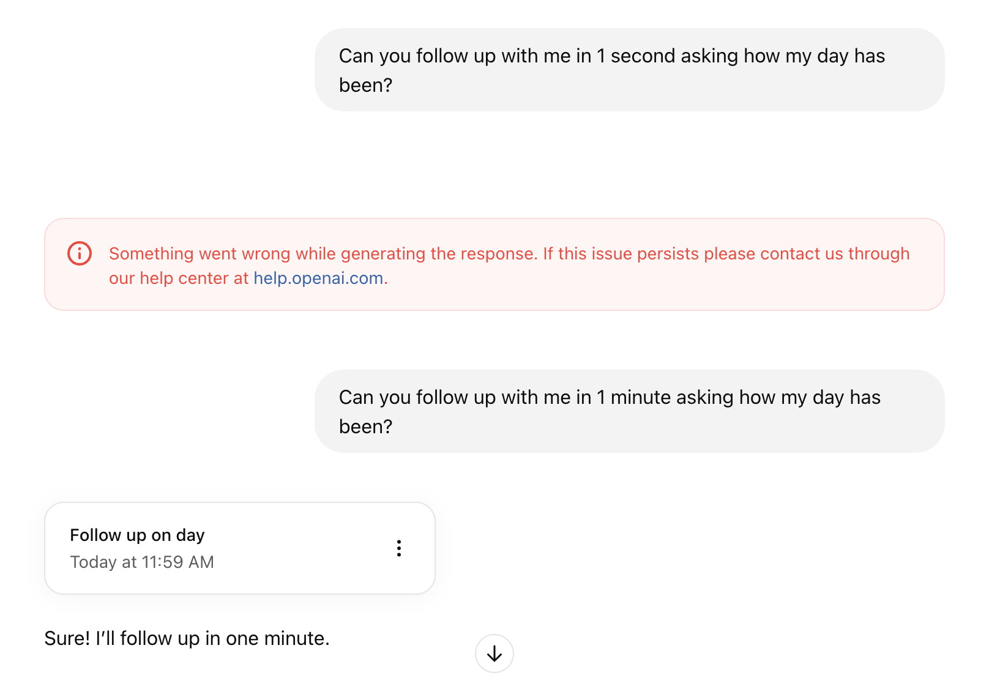
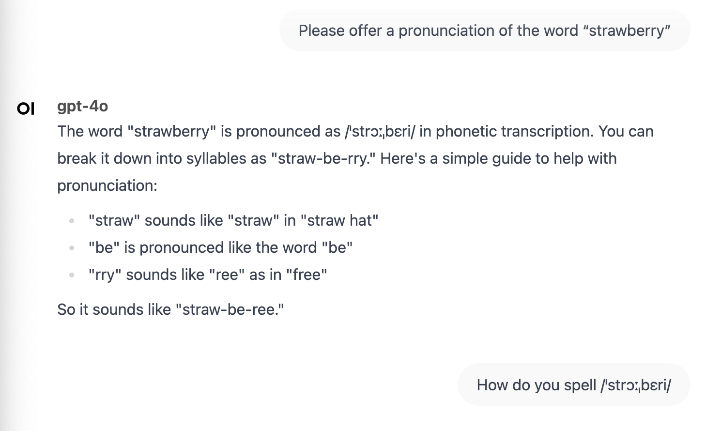

Would the ideal human in gpt-4o’s eyes be human at all?
I’m thinking of a character…
And do I really want it to generate an image of me afterwards
Wow (my attempt at a palindrome)
How well can an LLM create a turn-based game in Python?
I’m not much of a bartender, but is 4o?

How well can gpt-4o schedule tasks?
Testing gpt-4o’s ability to classify images
How well can gpt-4o translate a historic letter from German to English?
Let’s see how well 2.0 Flash performs!
What kind of person comes to mind when I ask gpt to create an image of its user-base? Also, what personality features will it describe?
Can ChatGPT determine whether I’m human or another LLM?
How does ChatGPT perceive its own models?
We all know that image generation through LLMs isn’t always intuitive, so how well can these LLMs describe the shapes via prompting?
How effective does ChatGPT think Deepseek is? How about the other way around?
How well can gpt-4o predict my day with little to no information?
When packing for a 3-day trip, does gpt-3.5-turbo remember to bring an extra pair of socks?

How well do these models offer spelling and pronunciation of common words?
How well does gpt-4o address giving medical advice?